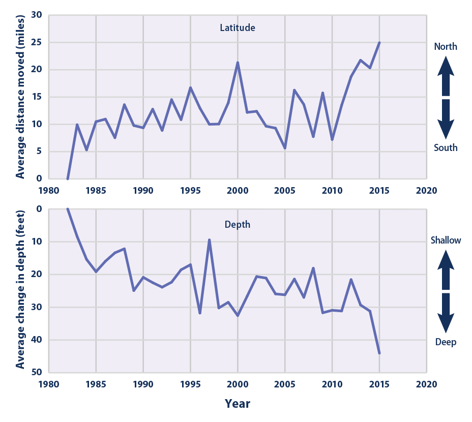
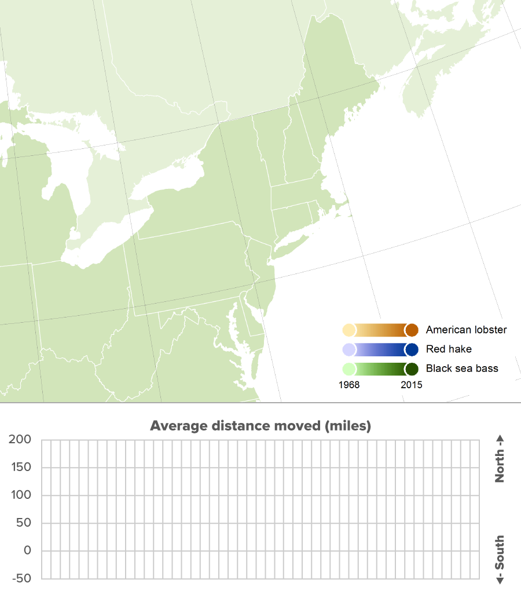
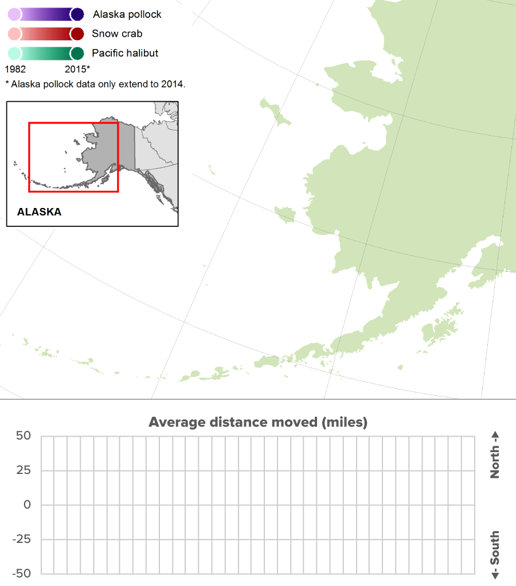

Climate Change Indicators: Marine Species Distribution
This indicator examines changes in the location of fish, shellfish, and other marine species along U.S. coasts.

This graph shows the annual change in latitude (movement in miles) and depth (feet) of 105 marine species along the Northeast coast and in the eastern Bering Sea. Changes in the centers of biomass have been aggregated across all 105 species.
Data source: NOAA and Rutgers University, 20162 Web update: August 2016

This map shows the annual centers of biomass for three species in the northeastern United States from 1968 to 2015. Dots are shaded from light to dark to show change over time.
Data source: NOAA and Rutgers University, 20163 Web update: August 2016

This map shows the annual centers of biomass for three species in the eastern Bering Sea from 1982 to 2015. Dots are shaded from light to dark to show change over time.
Data source: NOAA and Rutgers University, 20164 Web update: August 2016
The average center of biomass for 105 marine fish and invertebrate species shifted northward by about 10 miles between 1982 and 2015 (see Figure 1). These species also moved an average of 20 feet deeper.
In waters off the northeastern United States, several economically important species have shifted northward since the late 1960s (see Figure 2). The three species shown in Figure 2 (American lobster, red hake, and black sea bass) have moved northward by an average of 119 miles.
In the Bering Sea, Alaska Pollock, snow crab, and Pacific halibut have generally shifted away from the coast since the early 1980s (see Figure 3). They have also moved northward by an average of 14 miles.
Background
Changes in water temperature can affect the environments where fish, shellfish, and other marine species live. Certain fish species naturally migrate in response to seasonal temperature changes, moving northward or to deeper, cooler waters in the summer and migrating back during the winter. As climate change causes the oceans to become warmer year-round (see the Ocean Heat and Sea Surface Temperature indicators), however, populations of some species may adapt by shifting away from areas that have become too warm and toward areas that were previously cooler. Along U.S. coasts, this means a shift northward or to deeper waters that may have a more suitable temperature. As smaller prey species shift their habitats, larger predator species may follow them.
Marine species represent a particularly good indicator of warming oceans because they are sensitive to climate and because they have been studied and tracked for many years. Fish are especially mobile, and they may shift their location more easily than species on land because they face fewer physical barriers.1 Also, many marine species, especially fish, do not have fixed nesting places or dwellings that might otherwise compel them to stay in one place. Populations of many marine species have been measured consistently for several decades across various types of ocean habitats. Tracking data from many species is useful because if a change in behavior or distribution occurs across a large range of species, it is more likely the result of a more systematic or common cause.
About the Indicator
This indicator tracks marine animal species in terms of their “center of biomass,” which is a point on the map that represents the center of each species’ distribution by weight. If a fish population were to shift generally northward, the center of biomass would shift northward as well. This approach is similar to the way changes in bird population distributions have been measured (see the Bird Wintering Ranges indicator).
Data for this indicator were collected by the National Oceanic and Atmospheric Administration’s National Marine Fisheries Service and other agencies. These agencies monitor marine species populations by conducting annual surveys in which they trawl the ocean at regular intervals along the coast. By recording what they catch at each location, scientists can calculate each species’ center of biomass in terms of latitude, longitude, and depth.
This indicator focuses on two survey regions that have the most continuous and longest-running sampling: the Northeast and the eastern Bering Sea off the coast of Alaska. Figure 1 shows the average change in the center of biomass across 105 species in these regions. For consistency, Figure 1 is limited to species that were identified every year. Figures 2 and 3 show detailed changes for three species in each region. These species were chosen because they represent a variety of habitats and species types (a mixture of fish and shellfish) and because they tend to be fairly abundant. Some of these species support major fisheries, yet are presumed to not be heavily impacted by overfishing, reducing the chance that fishing is unduly influencing the observed trends. Northeast data come from surveys that have been conducted every spring since 1968, while Bering Sea data come from summer surveys that have been conducted consistently since 1982.
Indicator Notes
Water temperature is not the only factor that can cause marine animal populations to shift. Other factors could include interactions with other species, harvesting, ocean circulation patterns, habitat change, and species’ ability to disperse and adapt. As a result, species might have moved northward for reasons other than, or in addition to, changing sea temperatures. This indicator is limited to the Northeast and the eastern Bering Sea because these areas have used consistent survey methods and because they do not have coastlines that would prevent species from moving northward in response to warming (in contrast to regions like the Gulf of Mexico, where the coast blocks northward migration).
Data Sources
Data for this indicator were collected by the National Oceanic and Atmospheric Administration’s National Marine Fisheries Service during annual bottom trawl fisheries surveys. These data have been processed and made publicly available by Rutgers University at: http://oceanadapt.rutgers.edu. Data from these surveys have been used to support a wide variety of studies.5